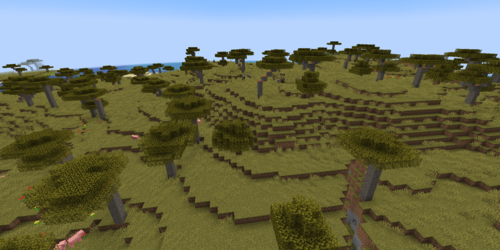

¿Cuántos biomas existen?
Galería de Actualizaciones
-
Biografía de Notch
-
Mobs
-
Herramientas y usos
-
Biomas
-
Dimensiones
Minecraft es un juego muy variado el cual cuenta con 48 biomas principales distintos, cada uno lleno de sus propiaos mobs y caracteristicas únicas. En la siguiente lista vamos a nombrar los mas distintivos y/o populares:
- Pradera: Un bioma plano y herboso con pendientes suaves y unos pocos robles. Además, cuenta con cuevas submarinas y aldeas.
- Bosque: Un bioma pequeño y muy común, con muchos árboles de roble y abedules, colinas ocasionales y una buena cantidad de hierbas altas, hongos y flores.
- Desierto: Es un bioma árido en comparación al resto, este se caracteriza por los médanos de arena. En este se generan cactus, conejos y estructuras como pirámides o aldeas.
- Jungla: Un bioma templado denso y poco común. Se caracteriza por los helechos y los grandes árboles selváticos. Los ocelotes, las pirámides, los melones, el cacao, los pandas y los loros se generan exclusivamente en este bioma.
- Océano: Este cuenta con muchas variantes, más frías y profundas, pero en todos su suelo es de grava. El pasto marino, las algas marinas, el bacalao y el salmón son parte de él.
- Meseta: Este bioma presenta hierba y robles, el color de la hierba y las hojas es de un tono marrón verdoso opaco, lo que le da un aspecto seco y muerto.
- Pantano: Un bioma caracterizado por una mezcla de areas planas sobre el nivel del mar y pequeñas piscinas de agua verdosa con nenúfares. Los árboles estan cubiertos con enredaderas y pueden ser encontradas creciendo bajo el agua. También, las cabañas de bruja con gatos negros y brujas aparecen exclusivamente en estos.
- Taiga: Un predominante bioma plano cubierto por un bosque de abetos. Helechos, grandes helechos y arbustos de bayas creciendo comúnmente en el suelo del bosque.
- Playa: Generadas cuando el óceano conecta con otros biomas, las playas están compuestas principalmente por arena y grava.
- Rios: Un bioma que consiste en bloques de aguas, los ríos atraviesan o separan los biomas principales.
- Colinas: Un bioma de altura donde algunas cumbres alcanzan la capa y=130, con algunos robles y abedules esparcidos. Aparecen acantilados, cimas, valles, cascadas, salientes, islas flotantes, cavernas y otras estructuras, lo que ofrece vistas increíbles.
- Sabana: Un bioma relativamente plano y seco con un color de hierba marrón opaco y árboles de acacia dispersos alrededor del bioma.

- Campo de Champiñones: Las praderas de champiñones se encuentran frecuentemente rodeadas por océano, aisladas de otros biomas. En estas, se encuentran campiñones gigantes y champiñacas (también llamadas mooshrooms).
Página Oficial